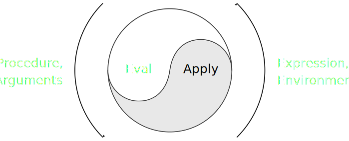

Índice
Majestic continua em desenvolvimento. Os últimos meses têm sido de malabarismo em vários aspectos da minha vida pessoal e profissional, e Majestic Lisp tem recebido uma refatoração total de seus testes unitários, o que significa que a linguagem, por enquanto, só tem recebido bugfixes.
Hoje, vou falar um pouco sobre a construção de um interpretador metacircular em Majestic Lisp. A ideia de construir um interpretador de (um subconjunto de) Majestic, na própria linguagem, tem também a ver com a ideia de testá-la.

Figura 1: Representação visual de um interpretador metacircular.
Fonte: Structure and Interpretation of Computer Programs (editado).
Alguns conceitos antes de começarmos
De acordo com a Wiki Wiki Web1, um interpretador metacircular é um interpretador escrito na mesma linguagem que interpreta. Para sê-lo, é necessário que esta definição de interpretador crie um "atalho", tornando possível não especificar uma semântica precisa para a linguagem.
O motivo para este "atalho" reside no fato de que as construções da linguagem são implementadas em termos de si mesmas. Por exemplo, um interpretador de Lisp feito em Lisp não precisaria definir células cons ou a ideia de listas diretamente, uma vez que a linguagem na qual o interpretador está sendo feito já implementa estas estruturas.
Portanto, um interpretador metacircular não é meramente uma operação de bootstrapping, que envolve uma especificação rígida da linguagem do zero, mas sim uma abstração em alto nível de uma linguagem (ou de um subset dela), feita nela mesma.
Notação auxiliar
O interpretador metacircular nada mais é que testes feitos em cima de expressões de Lisp, no nosso caso S-expressions, que na verdade compreendem listas aninhadas, sendo similares a árvores binárias na memória.
Vou usar uma notação um pouco diferente para compreendermos a intenção de cada parte do interpretador, que normalmente vai ser na forma
\begin{equation*} v[\texttt{x}] = \texttt{y} \end{equation*}
onde x é uma S-expression, e y é o resultado de sua interpretação.
A interpretação (operação \(v\)) de uma S-expression envolve algumas cláusulas. Para especificá-las separadamente, instruiremos alguns mapeamentos de valores de entrada para valores de saída, desse jeito:
\begin{equation*} \texttt{x} \mapsto \texttt{y} \end{equation*}Esta notação exemplifica uma especificação de uma das possíveis regras para \(v\): quando a S-expression de entrada é \(\texttt{x}\), o resultado será a S-expression \(\texttt{y}\).
Alguns desses mapeamentos podem, inclusive, serem recursivos. Por exemplo, um mapeamento como
\begin{equation*} \texttt{x} \mapsto v[\texttt{y}] \end{equation*}indicará que, para que obtenhamos o resultado da avaliação da S-expression \(\texttt{x}\), é necessário que façamos uma avaliação subsequente da S-expression \(\texttt{y}\). Isto pode ser necessário principalmente quando estivermos delegando um resultado à chamada de uma função auxiliar do interpretador, por exemplo.
Funções principais do interpretador
O nosso interpretador é, na verdade, uma aplicação extremamente
simples: vamos definir duas funções, chamadas eval. e apply. (os
pontos diferenciam-nas para que não sobreponham certas funções em
Majestic).
Nos próximos passos, nós vamos programar ambas essas funções, cláusula por cláusula.
Eval
A função eval. nada mais é que uma análise de casos; em outras
palavras, um encadeamento de verificações de condições e despachos com
base nestas condições.
A função completa é extremamente sucinta:
(def eval. (fn (exp env) (cond ((numberp exp) exp) ((stringp exp) exp) ((primitivep exp) exp) ((symbolp exp) (lookup. exp env)) ((eq (first exp) 'quote) (second exp)) ((eq (first exp) 'fn) (list 'closure (rest exp) env)) ((eq (first exp) 'cond) (evcond. (rest exp) env)) ((eq (first exp) 'def) (defglobal. (second exp) (third exp) env)) (t (apply. (eval. (first exp) env) (evlist. (rest exp) env))))))
Vamos esmiuçar a sua programação.
Iniciando a função
Aqui, realizaremos a avaliação da expressão exp sob o contexto env. O
contexto é algo como uma tabela de relações \(\textrm{símbolo}\,
\times\, \textrm{valor}\). Logo mais veremos como esta tabela pode ser
criada usando apenas S-expressions.
(def eval. (fn (exp env) (cond
Expressões auto-interpretáveis
Alguns tipos de S-expressions, quando interpretadas, resultam em si mesmas. Chamamos estas S-expressions de expressões auto-interpretáveis.
\begin{align*} 1 &\mapsto 1\\ \texttt{"Hello"} &\mapsto \texttt{"Hello"}\\ \texttt{#[primitive ...]} &\mapsto \texttt{#[primitive ...]} \end{align*}As principais expressões auto-interpretáveis são números, strings e funções primitivas. Propositalmente, utilizaremos as noções de como estes elementos são programados no próprio interpretador de Majestic, e não tocaremos em suas definições.
((numberp exp) exp) ((stringp exp) exp) ((primitivep exp) exp)
Símbolos
Se a expressão em questão for um símbolo, então retornaremos o valor
que estiver associado ao símbolo. Não vamos nos preocupar agora com o
local onde este símbolo poderia estar definido; este é um problema da
função lookup., a ser vista posteriormente.
Há também a possibilidade de um símbolo estar indefinido. Veremos melhor esta possibilidade mais tarde.
((symbolp exp) (lookup. exp env))
Quoting
Se a expressão for uma lista adequada cujo primeiro elemento seja o
símbolo quote, então sua interpretação é o segundo símbolo. Isto
introduz a ideia de quoting, crucial para a maioria dos
Lisps. Utilizando-a, podemos garantir que certas S-expressions sejam
tratadas como dados que não serão interpretados imediatamente.
Veja que, geralmente, denota-se uma expressão quotada como 'x. Esta
notação é algo que tem muito mais a ver com o leitor de expressões da
linguagem que com a forma como a função eval. processa essa
expressão. Portanto, para nossa conveniência, é muito mais
interessante pensar que o leitor transformará essa expressão em
(quote x).
((eq (first exp) 'quote) (second exp))
Clausuras
A próxima possibilidade é uma forma que indique uma função anônima. Precisamos criar algum tipo de objeto que descreva a função, que trata-se basicamente de tomar a lista de parâmetros e o corpo da mesma, bem como capturar o contexto onde a função está sendo interpretada.
\begin{align*} (\texttt{fn } \texttt{L } \texttt{B}) &\mapsto (\texttt{closure}\,\, (\texttt{L }\, \texttt{B})\,\, \texttt{#[env]})\\ \therefore\qquad (\texttt{fn } (\texttt{x})\, (\texttt{* } \texttt{x } \texttt{x})) &\mapsto (\texttt{closure}\,\, ((\texttt{x})\, (\texttt{* } \texttt{x } \texttt{x}))\,\, \texttt{#[env]}) \end{align*}
Para nossa conveniência, criaremos aqui uma representação interna em
lista, começada com o símbolo closure. O segundo elemento dessa lista
será uma sublista contendo parâmetros e corpo da função, e o terceiro
será o contexto no qual esta função está sendo interpretada – que
aqui, está contido na variável env.
((eq (first exp) 'fn) (list 'closure (rest exp) env))
Condicionais
Outra possibilidade é a condicional cond. Originalmente, Majestic
implementa cond como um macro que utiliza if por baixo dos panos. Aqui
faremos o contrário e priorizaremos cond.
cond avalia consecutivamente pares de cláusulas em formato de lista.
Cada par é composto de um predicado e uma expressão de
consequência. Se a avaliação do predicado resultar em um valor
diferente do símbolo nil, será retornada a avaliação da expressão a
ele associada. Se nenhum predicado obedecer a essa regra, será
retornado o símbolo nil em si.
Para que tenhamos o efeito desejado, considere que as fórmulas envolvendo \(\lor\) abaixo representadas sejam interpretadas sequencialmente, e não paralelamente.
\begin{equation*} (\texttt{cond }\, (p_{1}\,\, e_{1})\,\, (p_{2}\,\, e_{2})\,\, \dots\,\, (p_{n}\,\, e_{n})) \mapsto \begin{cases} &v[e_{1}]\qquad \textrm{quando } v[p_{1}] \neq \texttt{nil}\\ \lor\, &v[e_{2}]\qquad \textrm{quando } v[p_{2}] \neq \texttt{nil}\\ \lor\, &\dots\\ \lor\, &v[e_{n}]\qquad \textrm{quando } v[p_{n}] \neq \texttt{nil}\\ \lor\, &\texttt{nil} \end{cases} \end{equation*}
Para simplificar o processo, vamos fazer com que o corpo de cond seja
despachado para a função evcond, que realizará a interpretação
adequada dele sob o contexto env.
((eq (first exp) 'cond) (evcond. (rest exp) env))
Definições de valores
Quando estamos lidando com uma expressão iniciada por def, esta será
uma forma de definir, globalmente, um valor \(y\) associado a um certo
símbolo \(x\).
Nesse caso, def realiza uma alteração em um contexto global, que
estará acessível em qualquer situação do programa, com uma única
ressalva: caso estejamos no escopo de uma função, e esta função
possuir o símbolo \(x\) previamente definido como um de seus parâmetros,
então uma consulta a este mesmo símbolo \(x\) retornará o valor passado
por parâmetro à função em questão, e não o valor definido através de
def.
((eq (first exp) 'def) (defglobal. (second exp) (third exp) env))
Aplicação de funções
Até agora, tudo o que foi apresentado está relacionado ao que chamamos de formas especiais. Estas formas são formas específicas de interpretar certas S-expressions, que não estão relacionadas ao processo comum de interpretação.
É possível adicionar mais formas especiais que seriam mais regras alternativas de interpretação de expressões, porém precisamos tomar cuidado para que essas regras extras não sejam excessivas.
Caso nenhuma das formas especiais se enquadre, entramos neste caso comum de interpretação, que chamo livremente de interpretação por ordem aplicativa.
\begin{equation*} (f\, x\, y\, \dots) \mapsto v[(\texttt{apply } (\texttt{eval } f\,\, \texttt{#[env]})\,\, (\texttt{evlist } x\, y\, \dots\,\, \texttt{#[env]}))] \end{equation*}
A ideia é extremamente simples: primeiro, interpretamos a função f em
relação ao contexto env, o que nos renderá uma função primitiva ou
uma closure. Em seguida, interpretamos a lista de argumentos da função
em relação ao mesmo contexto. Finalmente, aplicamos a função
interpretada aos argumentos interpretados.
(t (apply. (eval. (first exp) env) (evlist. (rest exp) env))))))
Note que temos aí um processo recursivo e que não deixamos claro como
se dá o processo de aplicação. Neste último caso, isso é proposital,
pois delegaremos a ideia de aplicação de uma função à função apply,
que abordaremos agora.
Apply
A função apply. é bem mais simples. Trata-se da mesma ideia de análise
de casos. Porém, aqui vamos tratar apenas de três situações em
específico.
apply. é ainda mais sucinta que eval.:
(def apply. (fn (proc args) (cond ((primitivep proc) (apply proc args)) ((eq (first proc) 'closure) (eval. (second (second proc)) (bind. (first (second proc)) args (third proc)))) (t (err "Undefined procedure: {}" proc)))))
Veremos agora sua construção passo-a-passo.
Iniciando a função
apply. recebe uma certa função proc e uma lista de argumentos args
como parâmetro. Vamos assumir que os argumentos já tenham passado
pelo processo de interpretação do passo anterior, não precisando
portanto de serem interpretados novamente antes de seu uso.
(def apply. (fn (proc args) (cond
Aplicação de primitivas
O primeiro passo é avaliar se o procedimento em questão é uma função
primitiva. Em Majestic, isso possui um significado muito específico,
mas aqui poderíamos ter, por exemplo, uma verificação para saber se
proc é código de máquina, por exemplo.
O interpretador metacircular não lida com este tipo de caso, então
delegamo-no para outros lugares. Em especial, utilizaremos a forma
especial apply de Majestic para aplicar a função primitiva.
Note que essa forma especial apply não é a função apply., e sim algo
externo ao qual estamos recorrendo, algo embutido no interpretador
original de Majestic Lisp. Isso deixa bem claro o teor da
especificação semântica no interpretador metacircular, pois escolhemos
deliberadamente não esclarecer o que acontece aqui, e sim delegar a um
recurso subjacente da linguagem utilizada na programação.
((primitivep proc) (apply proc args))
Aplicação de clausuras
Caso o procedimento em questão seja uma função definida pelo usuário – uma clausura –, então teremos uma forma bem explícita de lidar com isso.
Aplicar uma função nada mais será que:
- Ligar os símbolos dos argumentos da função a seus respectivos parâmetros;
- Estender temporariamente o contexto capturado durante a definição da função, de forma que contenham as ligações feitas no passo 1;
- Interpretar o corpo da função sob este contexto gerado.
Fica claro, inclusive, que a operação \(v\) é, na verdade, um caso especial da operação \(e\) definida acima. Em outras palavras, \(v[\texttt{E}] = e[\texttt{E}, \texttt{nil}]\)2.
((eq (first proc) 'closure) (eval. (second (second proc)) (bind. (first (second proc)) args (third proc))))
Outras disposições
Poderiam ocorrer outros casos de aplicação no interpretador. Todavia, isto não ocorre aqui.
Uma situação anômala será considerada um erro; portanto, utilizaremos
a primitiva err de Majestic para propagar tal erro quando ocorrer.
(t (err "Undefined procedure: {}" proc)))))
Funções auxiliares
As funções que descrevo a seguir são auxiliares, portanto não serei muito rigoroso, só explicarei por alto o que fazem.
Evlist
Interpreta uma lista de expressões, retornando uma lista com os resultados das interpretações. Simples assim.
(def evlist. (fn (L env) (cond ((nilp L) nil) (t (cons (eval. (first L) env) (evlist. (rest L) env))))))
Evcond
A ideia é simples: O corpo de cond é composto de \(n\) listas de dois
elementos. Os elementos são, respectivamente, um predicado e um
consequente para aquele predicado.
evcond. percorre essas listas de dois elementos, interpretando cada
predicado. Quando a interpretação do predicado não for nil, então
retorna-se a interpretação do consequente. Caso contrário, evcond.
passa para a próxima lista de dois elementos.
Se não houver mais listas a serem varridas, nil é retornado.
(def evcond. (fn (clauses env) (cond ((nilp clauses) nil) ((eq (first-of-first clauses) t) (eval. (second (first clauses)) env)) ((nilp (eval. (first-of-first clauses) env)) (evcond. (rest clauses) env)) (t (eval. (second (first clauses)) env)))))
Contextos
O próximo tópico auxiliar é o gerenciamento de contextos de interpretação, relacionados à notação \(e[...]\) que utilizamos anteriormente.
Toda expressão é interpretada em um contexto, mesmo que ele seja vazio. E geralmente, esses contextos são criados ou estendidos temporariamente durante a aplicação de clausuras, funções do usuário.
Ligação entre símbolos e valores
As funções auxiliares bind. e pair-up. são responsáveis por ligar um
conjunto de variáveis a seus respectivos valores, e então criar um
novo contexto com esses pareamentos, reaproveitando um contexto
antigo.
Cada conjunto de novos pareamentos é conhecido como sendo um frame no
contexto. pair-up. cria um novo frame, bind. adiciona este frame ao
contexto antigo (sem modificá-lo).
(def bind. (fn (vars vals env) (cons (pair-up. vars vals) env))) (def pair-up. (fn (vars vals) (cond ((nilp vars) (cond ((nilp vals) nil) (t (err "Too many arguments")))) ((nilp vals) (err "Too few arguments")) (t (cons (cons (first vars) (first vals)) (pair-up. (rest vars) (rest vals)))))))
Consulta
A consulta de um símbolo em um contexto nada mais é que varrer cada um de seus frames e, nestes frames, procurar nos pares de variáveis se há uma correspondência entre aquele determinado símbolo e algum valor.
Se houver, o valor é retornado; se não, um erro é levantado indicando que a variável não foi definida.
lookup. é responsável por varrer o contexto atrás de frames. assq. é a
função auxiliar que varre um frame à procura do símbolo e de seu valor
correspondente.
(def lookup. (fn (sym env) (cond ((nilp env) (err "Unbound variable {}" sym)) (t ((fn (vcell) (cond ((nilp vcell) (lookup. sym (rest env))) (t (rest vcell)))) (assq. sym (first env))))))) (def assq. (fn (sym alist) (cond ((nilp alist) nil) ((eq sym (first (first alist))) (first alist)) (t (assq. sym (rest alist))))))
Definição de variáveis
Durante o uso da forma especial def, o que se faz é modificar um
contexto inicial, que aqui armazenaremos na variável *env*, sendo esta
diretamente inacessível para o usuário do interpretador que estamos
construindo.
Quando um novo valor é definido através de def, um novo frame é criado
e incluído em *env*. Essa operação cria um novo contexto que
referencia o valor anterior de *env*. Subsequentemente, *env* passa a
apontar para esse novo contexto, sendo, portanto, modificado.
(def defglobal. (fn (sym val env) (cond ((symbolp sym) (set *env* (bind. (list sym) (list (eval. val env)) env)) sym) (t (err "Not a symbol: {}" sym)))))
Testando o interpretador
Agora que temos todas as partes do interpretador, basta realizarmos testes com ele.
Contexto global
Vamos começar definindo o contexto global, *env*. Definimos algumas
funções essenciais.
Veja que as funções essenciais são, na verdade, funções primitivas de Majestic Lisp. Aqui temos, mais uma vez, um exemplo claro de abuso da semântica da linguagem-base para definição do interpretador metacircular.
(def *env* (list (list (cons '+ +) (cons '- -) (cons '* *) (cons '/ /) (cons '= =) (cons 'print print) (cons 'numberp numberp) (cons 'symbolp symbolp) (cons 'stringp stringp) (cons 'first first) (cons 'second second) (cons 'rest rest) (cons 'third third) (cons 'err err) (cons 'first-of-first first-of-first) (cons 'primitivep primitivep) (cons 'cons cons) (cons 'last last) (cons 'eq eq) (cons 'nilp nilp) (cons 'list list))))
Testes
Os testes em si podem ser feitos diretamente através do uso da função
eval., bastando fornecer o contexto *env* como contexto de
interpretação.
Passamos a eval. uma expressão quotada (exceto quando se trata de algo
auto-interpretável), e *env*. Coletamos a saída da interpretação e a
imprimimos na tela.
(print "v[1] = {}" (eval. 1 *env*)) (print "v[(quote foo)] = {}" (eval. '(quote foo) *env*)) (print "v[(def num 7)] = {}" (eval. '(def num 7) *env*)) (print "v[(def square (fn (x) (* x x)))] = {}" (eval. '(def square (fn (x) (* x x))) *env*)) (print "v[num] = {}" (eval. 'num *env*)) (print "v[(square num)] = {}" (eval. '(square num) *env*)) (print "v[(((fn (x) (fn (y) (+ x y))) 3) 4)] = {}" (eval. '(((fn (x) (fn (y) (+ x y))) 3) 4) *env*))
O resultado pode ser visto a seguir.
v[1] = 1 v[(quote foo)] = foo v[(def num 7)] = num v[(def square (fn (x) (* x x)))] = square v[num] = 7 v[(square num)] = 49 v[(((fn (x) (fn (y) (+ x y))) 3) 4)] = 7
Conclusão
O interpretador metacircular aqui produzido é uma versão modificada do interpretador construído no Structure and Interpretation of Computer Programs, o lendário livro que, acredito eu, todo desenvolvedor deveria ler, mesmo sem fazer os exercícios.
O interpretador que fizemos tem alguns problemas. Por exemplo, ainda
é necessário fornecer *env* como contexto de interpretação inicial, o
que poderia ser problemático, caso seu conteúdo fosse modificado
durante uma expressão, para então ser utilizado (imagine usar def e
consultar seu valor na mesma interpretação).
Também faltam várias formas especiais de Majestic que aqui não foram
definidas. A maioria delas não é necessária para um interpretador
metacircular. Mas algumas formas, como set, seriam muito bem-vindas.
Notas de Rodapé:
Bem… isso não é inteiramente verdade aqui. Nesta versão do interpretador metacircular, precisamos de um contexto inicial em todas as situações. No interpretador de Majestic feito em Rust, porém, um contexto nulo força o interpretador a consultar a tabela global de símbolos. Esta também é a forma canônica de armazenar valores globais em LISPs mais antigos.